p1 <- seq(0 + 1e-06, 1 - 1e-06, length.out = 100)
p2 <- 1 - p1
# The missclassification error-rate:
E <- 1 - apply(rbind(p1, p2), 2, max)
# The Gini index:
G <- p1 * (1 - p1) + p2 * (1 - p2)
# The cross-entropy:
D <- -(p1 * log(p1) + p2 * log(p2))
plot(p1, E, type = "l", col = "black", xlab = "p_1", ylab = "value of error metric", ylim = c(min(c(E, G, D)), max(E, G, D)))
lines(p1, G, col = "blue")
lines(p1, D, col = "green")
legend(0.2, 0.1, c("Classification error", "Gini index", "Cross entropy"), col = c("black", "blue", "green"), lty = c(1, 1))
grid()
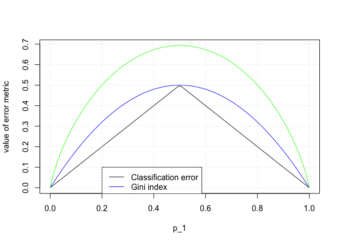
library(MASS)
library(randomForest)
## randomForest 4.6-10
## Type rfNews() to see new features/changes/bug fixes.
set.seed(0)
n <- nrow(Boston)
p <- ncol(Boston) - 1 # one column is the response we are trying to model i.e. 'medv'
train <- sample(1:n, n/2)
test <- (1:n)[-train]
ntree_to_test <- seq(from = 1, to = 500, by = 10)
# For a number of mtry values and a number of trees look at the test error rate:
# For mtry == p:
mse.bag <- rep(NA, length(ntree_to_test))
for (nti in 1:length(ntree_to_test)) {
nt <- ntree_to_test[nti]
# Grow a tree with 'nt' trees:
boston.bag <- randomForest(medv ~ ., data = Boston, mtry = p, ntree = nt, importance = TRUE, subset = train)
# Make predictions with this tree on the test dataset:
y_hat <- predict(boston.bag, newdata = Boston[test, ])
mse.bag[nti] <- mean((Boston[test, ]$medv - y_hat)^2)
}
# For mtry=p/2:
mse.p_over_two <- rep(NA, length(ntree_to_test))
for (nti in 1:length(ntree_to_test)) {
nt <- ntree_to_test[nti]
# Grow a tree with 'nt' trees:
boston.bag <- randomForest(medv ~ ., data = Boston, mtry = p/2, ntree = nt, importance = TRUE, subset = train)
# Make predictions with this tree on the test dataset:
y_hat <- predict(boston.bag, newdata = Boston[test, ])
mse.p_over_two[nti] <- mean((Boston[test, ]$medv - y_hat)^2)
}
# Run random forest with mtry=sqrt(p) and test on test set
mse.sqrt_p <- rep(NA, length(ntree_to_test))
for (nti in 1:length(ntree_to_test)) {
nt <- ntree_to_test[nti]
# Grow a tree with 'nt' trees:
boston.bag <- randomForest(medv ~ ., data = Boston, mtry = p/2, ntree = nt, importance = TRUE, subset = train)
# Make predictions with this tree on the test dataset:
y_hat <- predict(boston.bag, newdata = Boston[test, ])
mse.sqrt_p[nti] <- mean((Boston[test, ]$medv - y_hat)^2)
}
plot(ntree_to_test, mse.bag, xlab = "Number of Trees", ylab = "Test MSE", col = "red", type = "l")
lines(ntree_to_test, mse.p_over_two, xlab = "Number of Trees", ylab = "Test MSE", col = "blue", type = "l")
lines(ntree_to_test, mse.sqrt_p, xlab = "Number of Trees", ylab = "Test MSE", col = "green", type = "l")
grid()
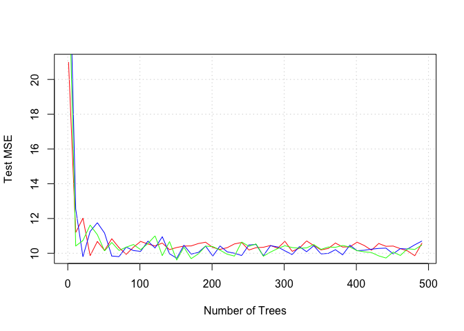
library(tree)
library(ISLR)
attach(Carseats)
set.seed(0)
n <- nrow(Carseats)
p <- ncol(Carseats) - 1 # remove the column we seek to predict i.e. Sales
# Part (a):
train <- sample(1:n, n/2)
test <- (1:n)[-train]
# Part (b):
rtree.carseats <- tree(Sales ~ ., data = Carseats[train, ])
summary(rtree.carseats)
##
## Regression tree:
## tree(formula = Sales ~ ., data = Carseats[train, ])
## Variables actually used in tree construction:
## [1] "ShelveLoc" "Price" "Age" "Population" "Income"
## [6] "Advertising" "CompPrice"
## Number of terminal nodes: 18
## Residual mean deviance: 1.828 = 332.6 / 182
## Distribution of residuals:
## Min. 1st Qu. Median Mean 3rd Qu. Max.
## -3.47100 -0.85760 0.01643 0.00000 0.96960 3.09800
plot(rtree.carseats)
text(rtree.carseats, pretty = 0)
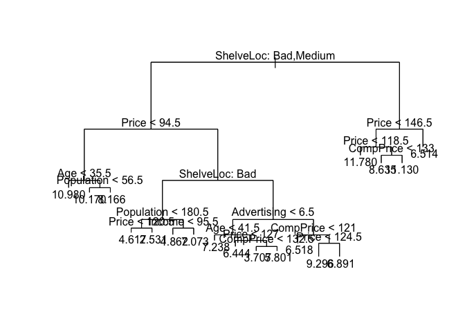
print(rtree.carseats)
## node), split, n, deviance, yval
## * denotes terminal node
##
## 1) root 200 1282.000 7.275
## 2) ShelveLoc: Bad,Medium 168 884.600 6.807
## 4) Price < 94.5 32 94.160 8.919
## 8) Age < 35.5 5 12.750 10.980 *
## 9) Age > 35.5 27 56.200 8.537
## 18) Population < 56.5 5 10.500 10.170 *
## 19) Population > 56.5 22 29.300 8.166 *
## 5) Price > 94.5 136 614.000 6.309
## 10) ShelveLoc: Bad 39 138.300 4.740
## 20) Population < 180.5 14 32.200 3.574
## 40) Price < 120.5 7 4.681 4.617 *
## 41) Price > 120.5 7 12.300 2.531 *
## 21) Population > 180.5 25 76.380 5.392
## 42) Income < 95.5 19 26.870 4.862 *
## 43) Income > 95.5 6 27.200 7.073 *
## 11) ShelveLoc: Medium 97 341.000 6.941
## 22) Advertising < 6.5 51 129.300 6.239
## 44) Age < 41.5 14 16.590 7.238 *
## 45) Age > 41.5 37 93.490 5.861
## 90) Price < 127 23 34.700 6.444 *
## 91) Price > 127 14 38.140 4.904
## 182) CompPrice < 132.5 6 5.325 3.707 *
## 183) CompPrice > 132.5 8 17.770 5.801 *
## 23) Advertising > 6.5 46 158.800 7.718
## 46) CompPrice < 121 14 27.200 6.518 *
## 47) CompPrice > 121 32 102.500 8.244
## 94) Price < 124.5 18 25.190 9.296 *
## 95) Price > 124.5 14 31.840 6.891 *
## 3) ShelveLoc: Good 32 167.000 9.735
## 6) Price < 146.5 27 92.560 10.330
## 12) Price < 118.5 9 11.530 11.780 *
## 13) Price > 118.5 18 52.580 9.606
## 26) CompPrice < 133 11 11.550 8.635 *
## 27) CompPrice > 133 7 14.360 11.130 *
## 7) Price > 146.5 5 12.960 6.514 *
y_hat <- predict(rtree.carseats, newdata = Carseats[test, ])
test.MSE <- mean((y_hat - Carseats[test, ]$Sales)^2)
print(test.MSE)
## [1] 4.477452
# Part (c): Use cross-validation to determine the optimal of tree complexity:
cv.carseats <- cv.tree(rtree.carseats)
names(cv.carseats)
## [1] "size" "dev" "k" "method"
print(cv.carseats)
## $size
## [1] 18 17 16 15 13 12 11 10 9 8 6 5 4 3 2 1
##
## $dev
## [1] 837.3778 861.1636 852.3690 857.1999 848.9026 880.5561 868.5359
## [8] 878.2036 871.2037 865.0657 863.9906 903.7486 895.1975 1092.0162
## [15] 1213.2771 1300.3878
##
## $k
## [1] -Inf 15.04210 15.22571 16.39571 19.95047 22.30687 25.21139
## [8] 26.66949 28.45630 29.66510 37.26307 52.93732 61.48054 134.73740
## [15] 176.45091 230.50903
##
## $method
## [1] "deviance"
##
## attr(,"class")
## [1] "prune" "tree.sequence"
plot(cv.carseats$size, cv.carseats$dev, type = "b") # plot the tree size
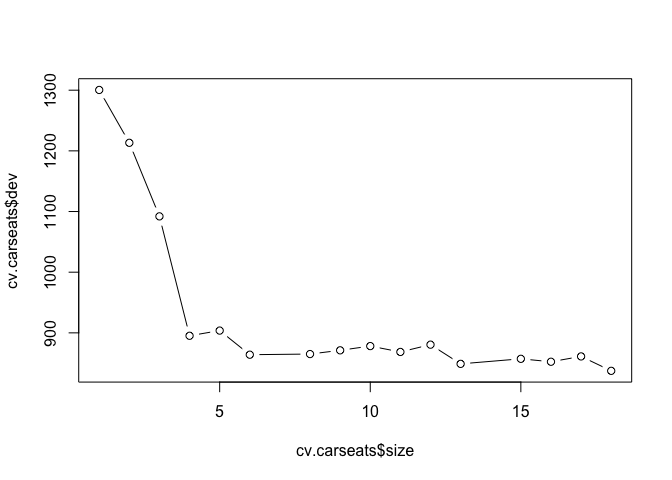
# Pick the size of the tree you want to prune to: It looks like k=6 is the smallest tree with an error close to the minimum.
prune.carseats <- prune.tree(rtree.carseats, best = 6)
plot(prune.carseats)
text(prune.carseats, pretty = 0)
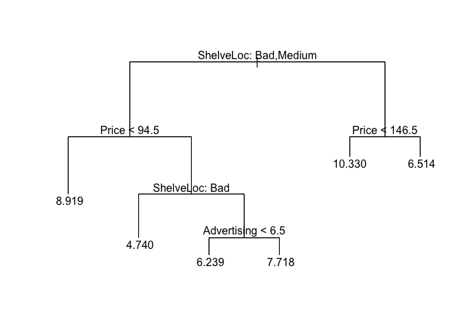
# Predict the MSE using this tree:
y_hat <- predict(prune.carseats, newdata = Carseats[test, ])
prune.MSE <- mean((y_hat - Carseats[test, ]$Sales)^2)
print(prune.MSE)
## [1] 5.208115
# Part (d): Use bagging
carseats.bag <- randomForest(Sales ~ ., data = Carseats, mtry = p, ntree = 500, importance = TRUE, subset = train)
y_hat <- predict(carseats.bag, newdata = Carseats[test, ])
mse.bag <- mean((Carseats[test, ]$Sales - y_hat)^2)
print(mse.bag)
## [1] 2.932783
plot(carseats.bag)
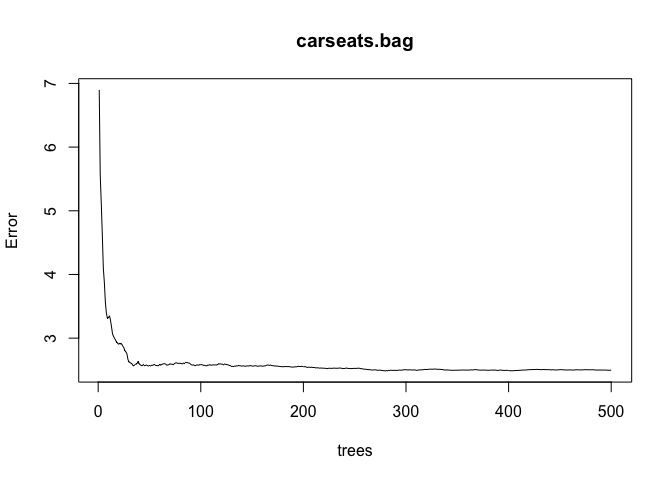
ibag <- importance(carseats.bag)
print(ibag[order(ibag[, 1]), ])
## %IncMSE IncNodePurity
## Population -1.9984333 54.142939
## Urban -0.6258907 7.397644
## Income 0.9075028 60.629023
## Education 2.7940569 42.414542
## US 5.2112303 10.687375
## Advertising 11.9998791 86.644936
## Age 14.5356992 118.623427
## CompPrice 21.4674924 127.767968
## ShelveLoc 49.7905463 348.452887
## Price 57.4299058 380.441111
# Part (e): Use random forests
carseats.rf <- randomForest(Sales ~ ., data = Carseats, ntree = 500, mtry = p/3, importance = TRUE, subset = train)
y_hat <- predict(carseats.rf, newdata = Carseats[test, ])
mse.rf <- mean((Carseats[test, ]$Sales - y_hat)^2)
print(mse.rf)
## [1] 3.673223
plot(carseats.rf)
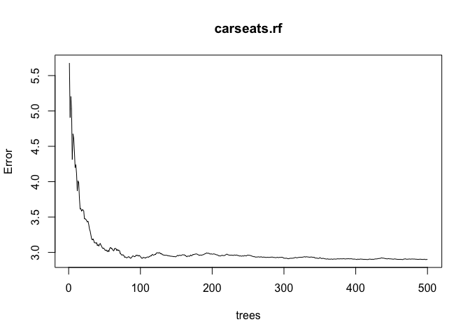
irf <- importance(carseats.rf)
print(irf[order(irf[, 1]), ])
## %IncMSE IncNodePurity
## Population -3.3907326 90.58748
## Urban -1.2095544 10.28038
## Education 0.7890977 60.82180
## Income 1.9668734 93.81426
## US 2.1490545 15.16011
## CompPrice 10.8896740 114.42913
## Age 12.2675136 150.19842
## Advertising 13.9004159 114.95596
## ShelveLoc 33.1071231 259.08665
## Price 36.7085556 298.84473
set.seed(0)
n <- nrow(OJ)
p <- ncol(OJ) - 1 # remove the response Purchase
# Part (a):
train <- sample(1:n, 800)
test <- (1:n)[-train]
# Part (b):
tree.OJ <- tree(Purchase ~ ., data = OJ[train, ])
summary(tree.OJ)
##
## Classification tree:
## tree(formula = Purchase ~ ., data = OJ[train, ])
## Variables actually used in tree construction:
## [1] "LoyalCH" "SalePriceMM" "ListPriceDiff" "PctDiscMM"
## Number of terminal nodes: 8
## Residual mean deviance: 0.7414 = 587.2 / 792
## Misclassification error rate: 0.1575 = 126 / 800
print(tree.OJ)
## node), split, n, deviance, yval, (yprob)
## * denotes terminal node
##
## 1) root 800 1067.00 CH ( 0.61375 0.38625 )
## 2) LoyalCH < 0.50395 346 412.40 MM ( 0.28324 0.71676 )
## 4) LoyalCH < 0.275354 160 104.00 MM ( 0.10000 0.90000 )
## 8) LoyalCH < 0.0506575 58 0.00 MM ( 0.00000 1.00000 ) *
## 9) LoyalCH > 0.0506575 102 88.62 MM ( 0.15686 0.84314 ) *
## 5) LoyalCH > 0.275354 186 255.20 MM ( 0.44086 0.55914 )
## 10) SalePriceMM < 2.04 99 117.90 MM ( 0.28283 0.71717 ) *
## 11) SalePriceMM > 2.04 87 115.50 CH ( 0.62069 0.37931 ) *
## 3) LoyalCH > 0.50395 454 358.30 CH ( 0.86564 0.13436 )
## 6) LoyalCH < 0.764572 182 214.00 CH ( 0.72527 0.27473 )
## 12) ListPriceDiff < 0.235 75 103.90 CH ( 0.52000 0.48000 )
## 24) PctDiscMM < 0.196196 59 77.94 CH ( 0.62712 0.37288 ) *
## 25) PctDiscMM > 0.196196 16 12.06 MM ( 0.12500 0.87500 ) *
## 13) ListPriceDiff > 0.235 107 83.03 CH ( 0.86916 0.13084 ) *
## 7) LoyalCH > 0.764572 272 92.12 CH ( 0.95956 0.04044 ) *
plot(tree.OJ)
text(tree.OJ, pretty = 0)
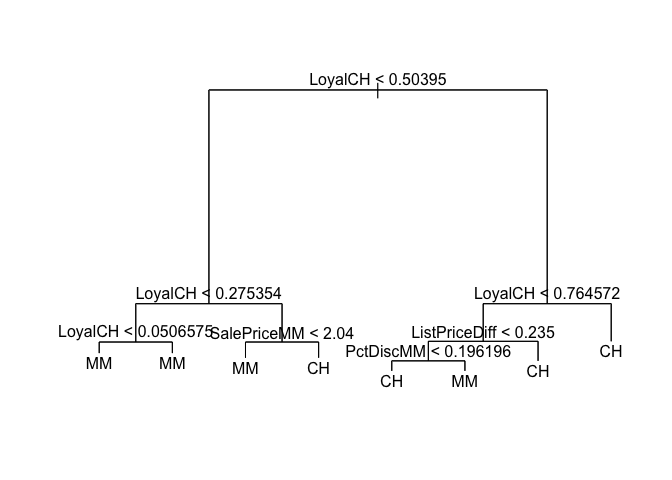
y_hat <- predict(tree.OJ, newdata = OJ[test, ], type = "class") # gives classification labels
CT <- table(y_hat, OJ[test, ]$Purchase)
print(CT)
##
## y_hat CH MM
## CH 142 27
## MM 20 81
print("original tree: classificaion error rate on the test dataset:")
## [1] "original tree: classificaion error rate on the test dataset:"
print((CT[1, 2] + CT[2, 1])/sum(CT))
## [1] 0.1740741
# Part (c): Use cross-validation to determine the optimal of tree complexity:
cv.OJ <- cv.tree(tree.OJ)
plot(cv.OJ$size, cv.OJ$dev, type = "b")
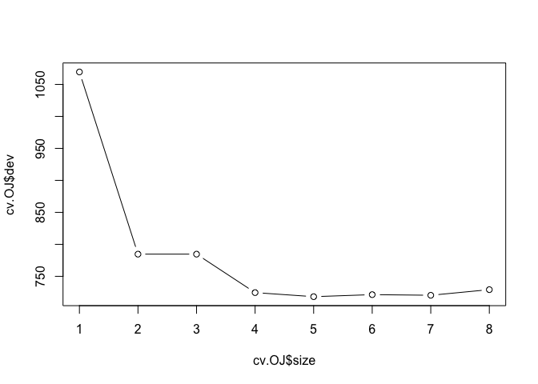
# Pick the size of the tree you want to prune to:
prune.OJ <- prune.tree(tree.OJ, best = 5)
plot(prune.OJ)
text(prune.OJ, pretty = 0)
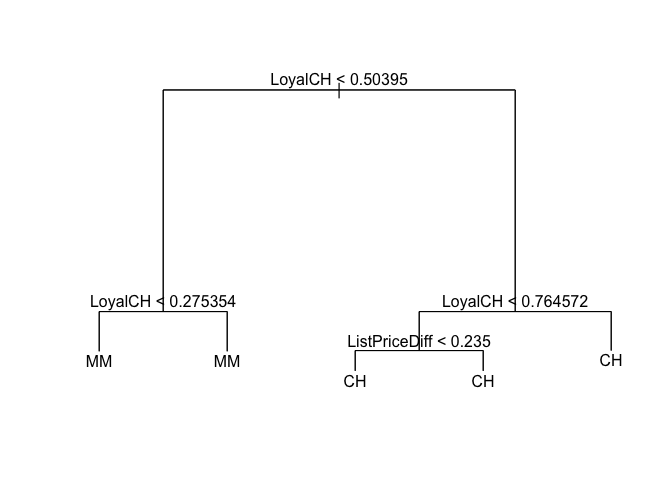
# Compute training error rates:
y_hat <- predict(prune.OJ, newdata = OJ[train, ], type = "class")
CT <- table(y_hat, OJ[train, ]$Purchase)
print("pruned tree: classificaion error rate on the training dataset:")
## [1] "pruned tree: classificaion error rate on the training dataset:"
print((CT[1, 2] + CT[2, 1])/sum(CT))
## [1] 0.19875
# Compute testing error rates:
y_hat <- predict(prune.OJ, newdata = OJ[test, ], type = "class")
CT <- table(y_hat, OJ[test, ]$Purchase)
print("pruned tree: classificaion error rate on the test dataset:")
## [1] "pruned tree: classificaion error rate on the test dataset:"
print((CT[1, 2] + CT[2, 1])/sum(CT))
## [1] 0.2037037
library(gbm)
## Loading required package: survival
## Loading required package: lattice
## Loading required package: splines
## Loading required package: parallel
## Loaded gbm 2.1.1
library(glmnet)
## Loading required package: Matrix
## Loading required package: foreach
## Loaded glmnet 2.0-2
set.seed(0)
Hitters <- na.omit(Hitters)
Hitters$Salary <- log(Hitters$Salary)
n <- nrow(Hitters)
p <- ncol(Hitters) - 1 # one column is the response we are trying to model i.e. 'Salary'
train <- 1:200
test <- 201:n
lambda_set <- seq(1e-04, 0.04, by = 0.001)
#
training_set_mse <- rep(NA, length(lambda_set))
test_set_mse <- rep(NA, length(lambda_set))
for (lmi in 1:length(lambda_set)) {
lm <- lambda_set[lmi]
boost.hitters <- gbm(Salary ~ ., data = Hitters[train, ], distribution = "gaussian", n.trees = 1000, interaction.depth = 4, shrinkage = lm)
y_hat <- predict(boost.hitters, newdata = Hitters[train, ], n.trees = 1000)
training_set_mse[lmi] <- mean((y_hat - Hitters[train, ]$Salary)^2)
y_hat <- predict(boost.hitters, newdata = Hitters[test, ], n.trees = 1000)
test_set_mse[lmi] <- mean((y_hat - Hitters[test, ]$Salary)^2)
}
plot(lambda_set, training_set_mse, type = "b", pch = 19, col = "red", xlab = "Lambda Value", ylab = "MSE")
lines(lambda_set, test_set_mse, type = "b", pch = 19, col = "green", xlab = "Lambda Value", ylab = "Test Set MSE")
grid()
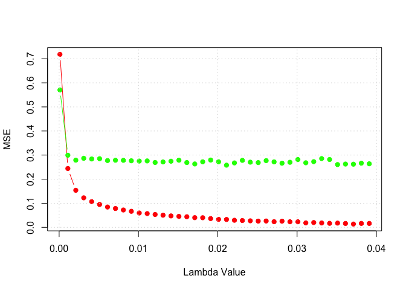
# Looks like the test MSE results are insensitive to the exact value of lambda as long as its small enough:
lm <- 0.01
boost.hitters <- gbm(Salary ~ ., data = Hitters[train, ], distribution = "gaussian", n.trees = 1000, interaction.depth = 4, shrinkage = lm)
y_hat <- predict(boost.hitters, newdata = Hitters[test, ], n.trees = 1000)
print("regression boosting test MSE:")
## [1] "regression boosting test MSE:"
print(mean((y_hat - Hitters[test, ]$Salary)^2))
## [1] 0.2756909
# Try linear regression:
m <- lm(Salary ~ ., data = Hitters[train, ])
y_hat <- predict(m, newdata = Hitters[test, ])
print("linear regression test MSE:")
## [1] "linear regression test MSE:"
print(mean((y_hat - Hitters[test, ]$Salary)^2))
## [1] 0.4917959
# Try the lasso:
MM <- model.matrix(Salary ~ ., data = Hitters[train, ])
cv.out <- cv.glmnet(MM, Hitters[train, ]$Salary, alpha = 1)
bestlam <- cv.out$lambda.1se
print("lasso CV best value of lambda (one standard error)")
## [1] "lasso CV best value of lambda (one standard error)"
print(bestlam)
## [1] 0.1571939
lasso.mod <- glmnet(MM, Hitters[train, ]$Salary, alpha = 1)
MM_test <- model.matrix(Salary ~ ., data = Hitters[test, ])
y_hat <- predict(lasso.mod, s = bestlam, newx = MM_test)
print("lasso regression test MSE:")
## [1] "lasso regression test MSE:"
print(mean((y_hat - Hitters[test, ]$Salary)^2))
## [1] 0.4382486
# Try ridge regression:
cv.out <- cv.glmnet(MM, Hitters[train, ]$Salary, alpha = 0)
plot(cv.out)
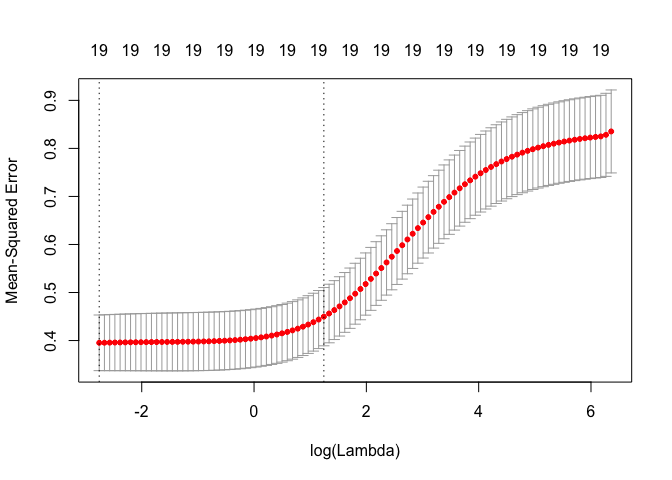
bestlam <- cv.out$lambda.1se
print("ridge CV best value of lambda (one standard error)")
## [1] "ridge CV best value of lambda (one standard error)"
print(bestlam)
## [1] 3.46633
ridge.mod <- glmnet(MM, Hitters[train, ]$Salary, alpha = 0)
Y_hat <- predict(ridge.mod, s = bestlam, newx = MM_test)
print("ridge regression test MSE:")
## [1] "ridge regression test MSE:"
print(mean((y_hat - Hitters[test, ]$Salary)^2))
## [1] 0.4382486
# What are the most important variables:
summary(boost.hitters)
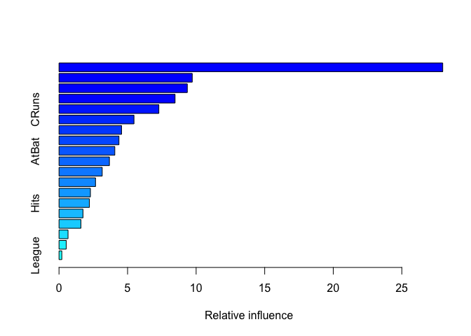
## var rel.inf
## CAtBat CAtBat 27.9843348
## CHits CHits 9.7163571
## CRBI CRBI 9.3564948
## CWalks CWalks 8.4641693
## CRuns CRuns 7.2820304
## Years Years 5.4674280
## PutOuts PutOuts 4.5604591
## Walks Walks 4.3724216
## AtBat AtBat 4.0692012
## CHmRun CHmRun 3.6759612
## Assists Assists 3.1511172
## RBI RBI 2.6630040
## Errors Errors 2.2909979
## Hits Hits 2.2133744
## HmRun HmRun 1.7480868
## Runs Runs 1.5973072
## NewLeague NewLeague 0.6577638
## Division Division 0.5252455
## League League 0.2042459
# Try randomForests on the Hitters dataset (not asked for in the problem statement):
rf.hitters <- randomForest(Salary ~ ., data = Hitters, mtry = p/3, ntree = 1000, importance = TRUE, subset = train)
y_hat <- predict(rf.hitters, newdata = Hitters[test, ])
mse.rf <- mean((Hitters[test, ]$Salary - y_hat)^2)
print("randomForest test MSE:")
## [1] "randomForest test MSE:"
print(mse.rf)
## [1] 0.2171106
# Try BAGGING on the Hitters dataset:
bag.hitters <- randomForest(Salary ~ ., data = Hitters, mtry = p, ntree = 1000, importance = TRUE, subset = train)
y_hat <- predict(bag.hitters, newdata = Hitters[test, ])
mse.bag <- mean((Hitters[test, ]$Salary - y_hat)^2)
print("Bagging test MSE:")
## [1] "Bagging test MSE:"
print(mse.bag)
## [1] 0.2342413
set.seed(0)
Caravan <- na.omit(Caravan)
n <- nrow(Caravan)
p <- ncol(Caravan) - 1 # one column is the response we are trying to model i.e. 'Purchase'
train <- 1:1000
test <- 1001:n
# Transform the response 'Purchase' to be in [0,1] as required by gbm:
PurchaseBinary <- rep(0, n)
PurchaseBinary[Caravan$Purchase == "Yes"] <- 1
Caravan$Purchase <- PurchaseBinary
# Some variables seem to be very noninformative (have zero variance as reported by gbm):
Caravan$PVRAAUT <- NULL
Caravan$AVRAAUT <- NULL
# Train a gbm:
lm <- 0.01
boost.caravan <- gbm(Purchase ~ ., data = Caravan[train, ], distribution = "bernoulli", n.trees = 1000, interaction.depth = 2, shrinkage = lm)
summary(boost.caravan)
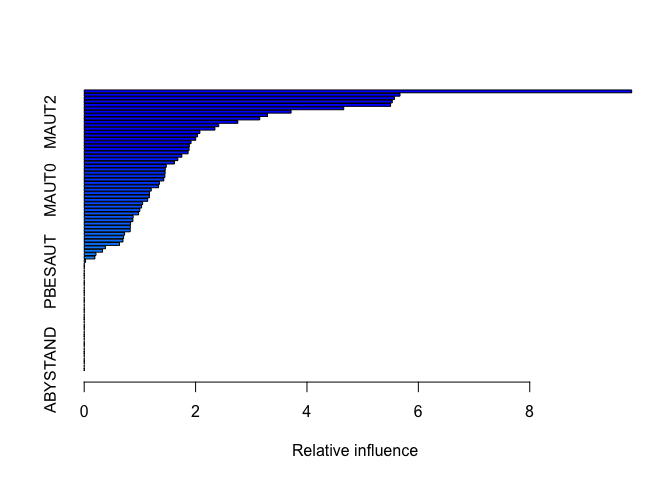
## var rel.inf
## PPERSAUT PPERSAUT 9.83047713
## MKOOPKLA MKOOPKLA 5.67101078
## MOPLHOOG MOPLHOOG 5.57015086
## PBRAND PBRAND 5.53090647
## MGODGE MGODGE 5.50146339
## MBERMIDD MBERMIDD 4.66053217
## MOSTYPE MOSTYPE 3.71528842
## MINK3045 MINK3045 3.29167392
## MGODPR MGODPR 3.15189659
## MAUT2 MAUT2 2.75860820
## MBERARBG MBERARBG 2.41585129
## ABRAND ABRAND 2.34750399
## MSKC MSKC 2.07742330
## MSKA MSKA 2.03539655
## MAUT1 MAUT1 2.00290825
## MRELGE MRELGE 1.91903070
## MSKB1 MSKB1 1.88713704
## PWAPART PWAPART 1.88354710
## MFWEKIND MFWEKIND 1.86568208
## MGODOV MGODOV 1.75362888
## MINK7512 MINK7512 1.68185238
## MFGEKIND MFGEKIND 1.62053883
## MBERHOOG MBERHOOG 1.47386158
## MBERARBO MBERARBO 1.45496977
## MINKM30 MINKM30 1.45332376
## MHKOOP MHKOOP 1.44894919
## MGODRK MGODRK 1.42859782
## MRELOV MRELOV 1.35136073
## MINKGEM MINKGEM 1.33514219
## MAUT0 MAUT0 1.20352717
## MZFONDS MZFONDS 1.17292916
## MINK4575 MINK4575 1.16903944
## MOSHOOFD MOSHOOFD 1.13985697
## MHHUUR MHHUUR 1.04951077
## MGEMLEEF MGEMLEEF 1.03005616
## APERSAUT APERSAUT 0.99864198
## MSKB2 MSKB2 0.97672510
## PBYSTAND PBYSTAND 0.87858256
## MOPLMIDD MOPLMIDD 0.87431940
## PMOTSCO PMOTSCO 0.83289524
## MFALLEEN MFALLEEN 0.82850043
## MZPART MZPART 0.82588303
## PLEVEN PLEVEN 0.72568141
## MGEMOMV MGEMOMV 0.70719044
## MSKD MSKD 0.69605715
## MBERBOER MBERBOER 0.63402319
## MBERZELF MBERZELF 0.38036763
## MRELSA MRELSA 0.32946406
## MINK123M MINK123M 0.21200829
## MOPLLAAG MOPLLAAG 0.19163868
## MAANTHUI MAANTHUI 0.02438834
## PWABEDR PWABEDR 0.00000000
## PWALAND PWALAND 0.00000000
## PBESAUT PBESAUT 0.00000000
## PAANHANG PAANHANG 0.00000000
## PTRACTOR PTRACTOR 0.00000000
## PWERKT PWERKT 0.00000000
## PBROM PBROM 0.00000000
## PPERSONG PPERSONG 0.00000000
## PGEZONG PGEZONG 0.00000000
## PWAOREG PWAOREG 0.00000000
## PZEILPL PZEILPL 0.00000000
## PPLEZIER PPLEZIER 0.00000000
## PFIETS PFIETS 0.00000000
## PINBOED PINBOED 0.00000000
## AWAPART AWAPART 0.00000000
## AWABEDR AWABEDR 0.00000000
## AWALAND AWALAND 0.00000000
## ABESAUT ABESAUT 0.00000000
## AMOTSCO AMOTSCO 0.00000000
## AAANHANG AAANHANG 0.00000000
## ATRACTOR ATRACTOR 0.00000000
## AWERKT AWERKT 0.00000000
## ABROM ABROM 0.00000000
## ALEVEN ALEVEN 0.00000000
## APERSONG APERSONG 0.00000000
## AGEZONG AGEZONG 0.00000000
## AWAOREG AWAOREG 0.00000000
## AZEILPL AZEILPL 0.00000000
## APLEZIER APLEZIER 0.00000000
## AFIETS AFIETS 0.00000000
## AINBOED AINBOED 0.00000000
## ABYSTAND ABYSTAND 0.00000000
# Predict the testing error:
y_hat <- predict(boost.caravan, newdata = Caravan[test, ], n.trees = 1000)
p_hat <- exp(y_hat)/(1 + exp(y_hat)) # convert the logodd output into probabilities
will_buy <- rep(0, length(test))
will_buy[p_hat > 0.2] <- 1
# Create a confusion matrix:
table(will_buy, Caravan[test, ]$Purchase)
##
## will_buy 0 1
## 0 4357 253
## 1 176 36
# Train a logistic regression:
lr_model <- glm(Purchase ~ ., data = Caravan[train, ], family = "binomial")
## Warning: glm.fit: fitted probabilities numerically 0 or 1 occurred
y_hat <- predict(lr_model, newdata = Caravan[test, ])
## Warning in predict.lm(object, newdata, se.fit, scale = 1, type =
## ifelse(type == : prediction from a rank-deficient fit may be misleading
p_hat <- exp(y_hat)/(1 + exp(y_hat)) # convert the logodd output into probabilities
will_buy <- rep(0, length(test))
will_buy[p_hat > 0.2] <- 1
# Create a confusion matrix:
table(will_buy, Caravan[test, ]$Purchase)
##
## will_buy 0 1
## 0 4183 231
## 1 350 58